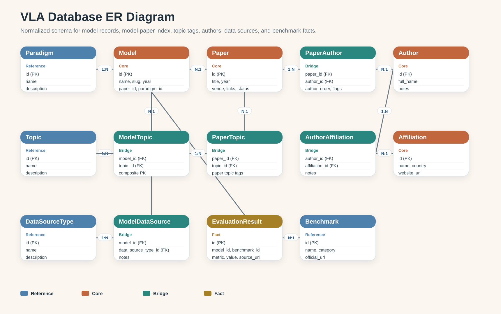

字段口径不统一
同一类信息在不同资料里命名不同，作者、topic、benchmark 结果难以标准化。
Database Course Project
这个项目不把重点放在“做一个很花的网页”，而是聚焦于把分散的 VLA 模型资料 规范化建模成一个可查询、可扩展、可维护的关系数据库系统。
Why This Project
VLA 模型相关信息散落在论文、项目主页、GitHub 仓库和 benchmark 表格中。 如果只靠 Excel 或人工整理，随着模型数量增加，很快就会暴露出维护和查询问题。
同一类信息在不同资料里命名不同，作者、topic、benchmark 结果难以标准化。
一篇论文有多位作者，一个作者可能有多个机构，一个模型也可能对应多个 topic 与数据来源。
按 paradigm、topic、benchmark 或年份筛选时，平铺表格难以支持联查和统计。
新增 benchmark、录入作者机构、补充评测结果时，非规范化结构往往会出现重复与不一致。
Design Architecture
先明确关系模式，再组织查询逻辑，最后做页面展示。课程项目最重要的是把“为什么这样设计”讲清楚。
核心实体、参考表、中间表和事实表分离，保证结构规范化与关系清晰。
通过 ORM 维护外键关系、用路由组织列表页、详情页、统计页和管理录入逻辑。
页面只承担“展示关系与查询结果”的职责，不把复杂逻辑塞进前端。
ER Design
本项目采用规范化设计，不把全部信息塞进一张大表。多值属性通过桥接表表达， benchmark 结果单独拆成事实表，便于后续扩展更多评测记录。

models、papers、authors、
affiliations、benchmarks 是主要业务对象。
paper_authors、author_affiliations、
model_topics、model_data_sources
用于表达多对多关系。
paradigms、topics、
data_source_types 统一分类口径，保证筛选和统计可靠。
evaluation_results 单独保存 metric、split、来源链接与备注，
支撑一个模型对应多个 benchmark 结果。
Relationship Summary
paper_authors 保存作者顺序、第一作者和通讯作者标记。
author_affiliations 关联机构。
model_topics 支持一个模型对应多个研究主题。
model_data_sources 表达 real robot、simulation、synthetic 或 mixed。
Database Capabilities
这套系统的价值不在于“数据量特别大”，而在于它能完整展示关系数据库课程常见的设计与查询能力。
浏览模型列表，查看模型名称、范式、年份、是否开源等基本信息。
按 paradigm、topic、benchmark 和关键词筛选模型，演示多表联查。
在模型详情页联动展示论文、作者、机构、数据来源和 benchmark 结果。
统计范式分布、topic 覆盖度、数据来源类型分布和 benchmark 覆盖情况。
支持新增模型、补充作者与机构关联、录入 benchmark result，展示 CRUD 闭环。
后续可以继续扩充更多模型、更多 benchmark 和更复杂的统计分析，而不需要推翻表结构。